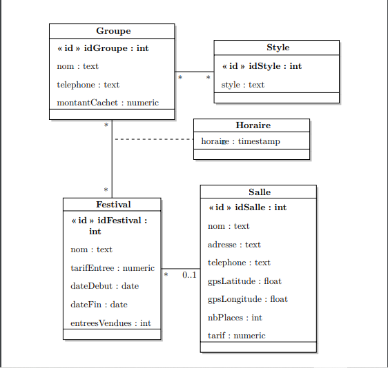

Diagramme de Classe
Voici le diagramme de classe qui représente les entités de notre projet de concert, ainsi que leurs relations :
Le diagramme montre les différentes entités (Groupe, Festival, Salle, Horaire, Style) ainsi que les relations entre elles, comme expliqué ci-dessous.
Entités et Relations du Modèle Relationnel
Ce modèle relationnel a été conçu pour gérer l'organisation d'un concert à Maubeuge. Il comporte plusieurs entités principales :
Les entités :
- Groupe : Représente un groupe de musique avec des informations comme le nom, le téléphone et le montant du cachet.
- Festival : Représente un festival où plusieurs concerts peuvent se dérouler, avec des détails comme la date, le tarif d'entrée et le nombre d'entrées vendues.
- Salle : Représente la salle de concert, avec des informations sur l'adresse, la capacité et les tarifs.
- Horaire : Représente les horaires des concerts dans un festival ou une salle spécifique.
- Style : Représente le style musical des groupes ou des concerts (rock, électro, etc.).
Relations entre les entités :
Voici comment ces entités sont liées dans notre modèle relationnel :
- Groupe - Festival (Relation Plusieurs à Plusieurs) : Un groupe peut jouer dans plusieurs festivals, et un festival peut comporter plusieurs groupes. Cela est représenté par la table de jointure Festival_Groupe.
- Groupe - Style (Relation Plusieurs à Plusieurs) : Un groupe peut jouer dans plusieurs styles musicaux. Cette relation est modélisée par la table de jointure Groupe_Style.
- Festival - Salle (Relation 0..1 à 1) : Un festival se déroule dans une salle spécifique. Chaque festival est lié à une salle où il a lieu. La salle contient des informations comme l'adresse, la capacité et le tarif.
- Festival - Horaire (Relation 1 à Plusieurs) : Un festival a plusieurs horaires pour les concerts qui se déroulent au cours de cet événement.
Structure des Tables SQL :
Les tables qui représentent les entités et les relations sont les suivantes :
1. Table Groupe
CREATE TABLE Groupe (
idGroupe INT AUTO_INCREMENT PRIMARY KEY,
nom TEXT,
telephone TEXT,
montantCachet NUMERIC
);
2. Table Festival
CREATE TABLE Festival (
idFestival INT AUTO_INCREMENT PRIMARY KEY,
nom TEXT,
tarifEntree NUMERIC,
dateDebut DATE,
dateFin DATE,
entreesVendues INT,
idSalle INT,
FOREIGN KEY (idSalle) REFERENCES Salle(idSalle)
);
3. Table Salle
CREATE TABLE Salle (
idSalle INT AUTO_INCREMENT PRIMARY KEY,
nom TEXT,
adresse TEXT,
telephone TEXT,
gpsLatitude FLOAT,
gpsLongitude FLOAT,
nbPlaces INT,
tarif NUMERIC
);
4. Table Horaire
CREATE TABLE Horaire (
idHoraire INT AUTO_INCREMENT PRIMARY KEY,
horaire TIMESTAMP,
idFestival INT,
FOREIGN KEY (idFestival) REFERENCES Festival(idFestival)
);
5. Table Style
CREATE TABLE Style (
idStyle INT AUTO_INCREMENT PRIMARY KEY,
style TEXT
);
6. Table de jointure Festival_Groupe
CREATE TABLE Festival_Groupe (
idFestival INT,
idGroupe INT,
PRIMARY KEY (idFestival, idGroupe),
FOREIGN KEY (idFestival) REFERENCES Festival(idFestival),
FOREIGN KEY (idGroupe) REFERENCES Groupe(idGroupe)
);
7. Table de jointure Groupe_Style
CREATE TABLE Groupe_Style (
idGroupe INT,
idStyle INT,
PRIMARY KEY (idGroupe, idStyle),
FOREIGN KEY (idGroupe) REFERENCES Groupe(idGroupe),
FOREIGN KEY (idStyle) REFERENCES Style(idStyle)
);
Extension Prestataire
En tant qu'extension de notre projet, nous avons ajouté une table pour gérer les prestataires qui fournissent des services pour l'organisation du concert (par exemple, sonorisation, éclairage, sécurité, etc.). Cette extension permet de lier les prestataires à des festivals et d'enregistrer leurs informations essentielles.
Les entités Prestataire :
- Prestataire : Représente un prestataire avec des informations comme le nom de l'entreprise, le type de service fourni et les coordonnées.
- Festival_Prestataire : Table de jointure qui lie les prestataires aux festivals dans lesquels ils fournissent des services.
Structure des Tables SQL pour l'extension Prestataire :
1. Table Prestataire
CREATE TABLE Prestataire (
idPrestataire INT AUTO_INCREMENT PRIMARY KEY,
nomEntreprise TEXT,
serviceFournit TEXT,
telephone TEXT,
email TEXT
);
2. Table de jointure Festival_Prestataire
CREATE TABLE Festival_Prestataire (
idFestival INT,
idPrestataire INT,
PRIMARY KEY (idFestival, idPrestataire),
FOREIGN KEY (idFestival) REFERENCES Festival(idFestival),
FOREIGN KEY (idPrestataire) REFERENCES Prestataire(idPrestataire)
);
Exemple d'utilisation de cette extension :
Imaginons que le festival "Maubeuge Rocks" engage plusieurs prestataires pour la sonorisation et la sécurité. Ces prestataires seront enregistrés dans la table Prestataire, et chaque prestataire sera lié à ce festival via la table de jointure Festival_Prestataire.
Réflexion sur le Projet
Ce que ce projet m'a apporté :
Ce projet a été une excellente occasion de mettre en pratique mes compétences acquises durant ma première année de BUT Informatique. Travailler sur un projet concret m'a permis de comprendre l'importance du modèle relationnel et de la gestion des bases de données dans des projets réels. J'ai appris à créer des tables et des relations en SQL, à réfléchir à la structure de données nécessaire pour répondre aux besoins d'un concert ou d'un festival, et à implémenter une extension (prestataire) qui est devenue un ajout essentiel à l'ensemble du projet.
En plus des aspects techniques, ce projet a été une excellente opportunité de travailler en groupe. La collaboration avec mes camarades m'a permis de comprendre l'importance de la communication dans la gestion d'un projet. Chacun de nous a pu se concentrer sur une partie du travail, tout en s'assurant que le projet dans son ensemble restait cohérent et fonctionnel.
Ce que j'ai aimé :
J'ai vraiment apprécié le côté pratique du projet. Passer de la théorie à la mise en place d'un projet concret m'a motivé. Ce que j'ai aimé particulièrement, c'est de voir comment chaque partie du projet (les groupes, les festivals, les prestataires, etc.) interagit et s'intègre dans une base de données. L'extension "Prestataire" a aussi été un ajout intéressant, car cela m'a permis d'explorer la gestion des relations complexes et de comprendre l'importance de l'adaptabilité des systèmes de gestion de bases de données.
J'ai aussi aimé travailler avec mes coéquipiers sur ce projet. Chaque membre a pu apporter ses propres compétences et idées, ce qui a enrichi l'expérience. Ce travail en équipe m'a permis d'apprendre de nouvelles méthodes de travail et d'améliorer mes compétences en communication et en gestion de projet.
Ce que je n'ai pas aimé :
Ce que je n'ai pas aimé, c'est la partie qui nécessitait des ajustements constants entre les différentes parties du projet. Par exemple, il était parfois difficile de gérer les différences de compréhension de certaines parties du projet entre les membres de l'équipe. De plus, le travail de base de données (création des tables, gestion des requêtes) était parfois un peu long et répétitif, mais au final, il m'a permis de bien maîtriser cet aspect technique, ce qui est un point positif pour la suite.
Enfin, bien que la partie Prestataire soit intéressante, elle a ajouté un peu de complexité à la gestion des relations dans la base de données. Cela a été un défi, mais cela m'a permis d'approfondir ma compréhension des modèles relationnels complexes et des jointures en SQL.